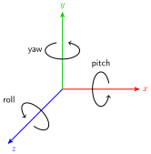
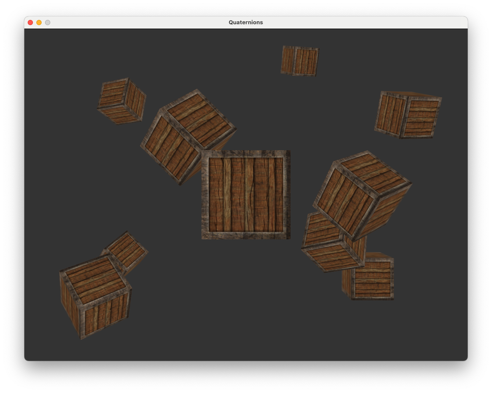
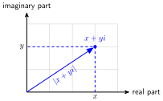
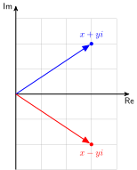
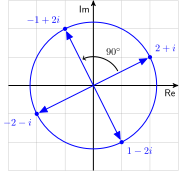
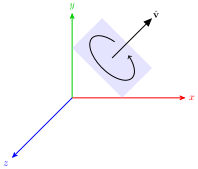
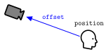

10. Quaternions#
We saw in Lab 5 in Transformations that we can use calculate a transformation matrix to rotate about a vector. This matrix was derived by compositing three individual rotations about the three co-ordinate \(x\), \(y\) and \(z\) axes.
{kind=link}

Fig. 10.1 The pitch, yaw and roll Euler angles.#
The angles that we use to define the rotation around each of the axes are known as Euler angles and we use the names pitch, yaw and roll for the rotation around the \(x\), \(y\) and \(z\) axes respectively. To problem with using a composite of Euler angles rotations is that for certain alignments we can experience gimbal lock where two of the rotation axes are aligned leading to a loss of a degree of freedom causing the composite rotation to be “locked” into a 2D rotation.
Quaternions are a mathematical object that can be used to perform rotation operations that do not suffer from gimbal lock and require few floating point calculations.
Download and build the project files for this lab.
Go to https://github.com/jonshiach/Lab10_Quaternions and follow the instructions to download and build the project files.
Open the project file
Lab10_Quaternions.sln(orLab10_Quaternions.xcodeprojon macOS) set the Lab10_Quaternions project as the startup project.Visual Studio: right-click on the Lab10_Quaternions project and select Set as Startup Project.
Xcode: Click on the target select dropdown (to the right of the name of the project at the top of the window) and select Lab10_Quaternions as the target.
Build the project by pressing CTRL + B (or ⌘B on Xcode) which should build the project without errors. Run the executable by pressing F5 (or ⌘R on Xcode).
Compile and run the project and you will see that we have the scene consisting of the cubes last seen in Lab 7.
{kind=link}

This project includes a Maths class that contains member functions that calculate the translation matrices for translation, scaling and rotation.
10.1. Complex Numbers#
Before we delve into quaternions we must first look at complex numbers. Consider the equation
Simple algebra gives the solution \(x = \sqrt{-1}\) but since a square of a number always returns a positive value, there does not exist a real number to satisfy the solution to this equation. Not being satisfied with this mathematicians invented another type of number called the imaginary number that is defined by \(i^2 = -1\) so the solution to the equation above is \(x = i\).
Imaginary numbers can be combined with real numbers to give us a complex number. Despite their name, complex numbers aren’t complicated at all, they are simply a real number added to a multiple of the imaginary number
where \(x\) and \(y\) are real numbers, \(x\) is known as the real part and \(y\) is known as the imaginary part of a complex number.
Since a complex number consists of two parts we can plot them on a 2D space called the complex plane where the horizontal axis is used to represent the real part and the vertical axis is used to represent the imaginary part (Fig. 10.2).
{kind=link}

Fig. 10.2 The complex number \(x + yi\) plotted on the complex plane.#
Each complex number \(z = x + yi\) has a complex conjugate which is denoted by \(z^*\) and is defined by negating the sign of the complex part
When plotted on the complex plane, we can see that the complex conjugate of \(z\) is the reflection of \(z\) about the real axis (Fig. 10.3).
{kind=link}

Fig. 10.3 Plot of the complex conjugate to \(x + yi\).#
10.1.1. Rotation using complex numbers#
A very useful property of complex numbers, and the reason why we are interested in them, is that multiplying a number by \(i\) rotates the number by \(90^\circ\) in the complex plane. For example consider the complex number \(2 + i\), multiplying repeatedly by \(i\) gives
So after four multiplications we are back to the original complex number. Fig. 10.4 shows these complex numbers plotted on the complex plane. Note how they have been rotated by \(90^\circ\) each time.
{kind=link}

Fig. 10.4 Rotation of the complex number \(2 + i\) by repeated multiplying by \(i\).#
The radius of the circle shown in Fig. 10.4 can be calculated using Pythagoras’ theorem, i.e.,
This values is known as the absolute value of the complex number \(2 + i\). The absolute value of the general form of a complex number \(z = x + yi\) is denoted by \(|z|\) and calculated using
So we have seen that multiplying a number by \(i\) rotates it by 90\(^\circ\). To multiply by an arbitrary angle \(\theta\) we multiply by the following complex number
10.2. Quaternion Rotations#
A quaternion is an extension of a complex number where two additional imaginary numbers are used to extend from a 2D space to a 4D space. The general form of a quaternion is
where \(w\), \(x\), \(y\) and \(z\) are real numbers and \(i\), \(j\) and \(k\) are imaginary numbers which are related to -1 and each other by
Quaternions are more commonly represented in scalar-vector form
Like any number, we can perform operations on quaternions. For example, to multiply a quaternion by a scaler value we multiply the \(w\), \(x\), \(y\) and \(z\) values by that scalar. For example
We are going to add a data structure to the Maths class and some member functions to perform quaternion calculations. In the maths.hpp file add the following code
struct Quaternion
{
float w, x, y, z;
// Constructors
Quaternion();
Quaternion(const float w, const float x, const float y, const float z);
// Methods
void scalarMultiply(const float k);
};
This is a data structure called Quaternion which contains the attributes w, x, y and z values, two constructor methods and a method to multiply the quaternion by a scalar.
In the maths.cpp add the following function definitions for the constructors and the scalar multiplication method.
// Quaternion constructors
Quaternion::Quaternion () {}
Quaternion::Quaternion(const float w, const float x, const float y, const float z)
{
this->w = w;
this->x = x;
this->y = y;
this->z = z;
}
// Scalar multiplication of quaternion
void Quaternion::scalarMultiply(const float k)
{
w *= k;
x *= k;
y *= k;
z *= k;
}
10.2.1. Unit quaternions#
The absolute value of a quaternion \(q\) is denoted by \(|q|\) and is calculated using
A unit quaternion is a quaternion with an absolute value of 1. We can normalize a quaternion by dividing by its absolute value
Lets add a method to our Quaternion data structure to normalize a quaternion. In maths.hpp add the following methods declaration
void normalize();
and add the method definition to maths.cpp.
// Normalize quaternion
void Quaternion::normalize()
{
float abs = sqrt(w * w + x * x + y * y + z * z);
scalarMultiply(1.0f / abs);
}
So we can now normalise a quaternion q by calling q.normalize().
10.2.2. Quaternion rotations#
We saw above that we can rotate a number in the complex plane by multiplying by the complex number
We can do similar in 4D space by multiplying a quaternion by the rotation quaternion
where \(\hat{\vec{v}}\) is a unit vector around which we are rotating (see Appendix: Quaternion rotation for the derivation of this).
{kind=link}

Fig. 10.5 Axis-angle rotation about the vector \(\hat{\vec{v}}\).#
We have been using \(4 \times 4\) matrices to compute the transformations to convert between model, view and screen spaces so in order to use quaternions for rotations we need to calculate a \(4 \times 4\) rotation matrix that is equivalent to multiplying by the rotation quaternion from equation (10.1).
If \(q = [w, (x, y, z)]\) is the rotation quaternion then the rotation matrix is
where \(s = \dfrac{2}{w^2 + x^2 + y^2 + z^2}\) (see Appendix: Rotation matrix for the derivation of this matrix).
In maths.hpp add the following method declaration to the Quaternion data structure
glm::mat4 quatToMat();
Then in maths.cpp add the following method definition
// Quaternion to rotation matrix conversion
glm::mat4 Quaternion::quatToMat()
{
float s = 2.0f / (w * w + x * x + y * y + z * z);
float xs = x * s, ys = y * s, zs = z * s;
float xx = x * xs, xy = x * ys, xz = x * zs;
float yy = y * ys, yz = y * zs, zz = z * zs;
float xw = w * xs, yw = w * ys, zw = w * zs;
glm::mat4 R = glm::mat4(1.0f);
R[0][0] = 1.0f - (yy + zz); R[0][1] = xy + zw; R[0][2] = xz - yw;
R[1][0] = xy - zw; R[1][1] = 1.0f - (xx + zz); R[1][2] = yz + xw;
R[2][0] = xz + yw; R[2][1] = yz - xw; R[2][2] = 1.0f - (xx + yy);
return R;
}
We can now calculate the rotation matrix for a rotation quaternion q using q.quatToMat(). Comparing this code to the definition of Maths::rotate() in the maths.cpp file we can see the the the quaternion rotation matrix requires 16 multiplications compared to 24 multiplications to calculate the rotation matrix based on the composite of three separate rotations about the \(x\), \(y\) and \(z\) axes. Efficiency is always a bonus but the main advantage however is the quaternion rotation matrix does not suffer from gimbal lock.
So it makes sense to use the quaternion rotation matrix for our axis-angle rotations. Edit the Maths::rotate() function definition so that is looks like the following.
glm::mat4 Maths::rotate(const glm::mat4 mat, const float angle, const glm::vec3 vec)
{
glm::vec3 v = Maths::normalize(vec);
float cs = cos(0.5f * angle);
float sn = sin(0.5f * angle);
Quaternion q(cs, sn * v.x, sn * v.y, sn * v.z);
return q.quatToMat() * mat;
}
Here we calculate the rotation quaternion q and then output the rotation matrix multiplied by the input matrix mat (it isn’t really necessary to do this but I wanted our rotate() function to have the same functionality as the glm version).
Compile and run your program and you should see that nothing has changed. This is good news as we are now using efficient quaternion rotation to rotate the cubes and don’t have to worry about gimbal lock.
10.2.3. Euler angles to quaternion#
Quaternions can be thought of as a orientation in 4D space. Imagine a camera in the world space that is pointing in a particular direction. The direction in which the camera is pointing can be described with reference to the \(x\), \(y\) and \(z\) axes in terms of the pitch, yaw and roll Euler angles.
Given the three Euler angles pitch, yaw and roll then using the abbreviations
the quaternion that represents the camera orientation is
See Appendix: Euler angles to quaternion for the derivation of this.
We are going to add a member function to convert from Euler angles to the rotation quaternion. Add the following to the Quaternion data structure declaration in maths.hpp
void eulerToQuat(const float pitch, const float yaw, const float roll);
and in the maths.cpp define the eulerToQuat() method
// Euler angles to quaternion
void Quaternion::eulerToQuat(const float pitch, const float yaw, const float roll)
{
float cr, cp, cy, sr, sp, sy;
cr = cos(0.5f * roll);
cp = cos(0.5f * pitch);
cy = cos(0.5f * yaw);
sr = sin(0.5f * roll);
sp = sin(0.5f * pitch);
sy = sin(0.5f * yaw);
Quaternion q;
w = cp * cr * cy - sp * sr * sy;
x = sp * cr * cy + cp * sr * sy;
y = cp * cr * sy - sp * sr * cy;
z = cp * sr * cy + sp * cr * sy;
}
We can now calculate the quaternion for the orientation given by the pitch, yaw and roll Euler angles using q.eulerToQuat().
We currently using Euler angles rotation to calculate the view matrix in the calculateMatrices() Camera class camera class function. So our camera may suffer from gimbal lock and it also does not allow us to move the camera through 90\(^\circ\) or 270\(^\circ\) (try looking at the cubes from directly above or below and you will notice the orientation suddenly flipping orientation). So it would be advantageous to use quaternion rotations for calculate the view matrix.
First we need to add an attribute to the Camera class for the quaternion that describes the direction which the camera is looking. In camera.hpp add the following code.
// Direction quaternion
Quaternion direction;
Then in the camera.cpp file, comment out the lines where we update the camera vectors and the line where we call the glm::lookAt() function and add the following code.
// Calculate direction quaternion
direction.eulerToQuat(pitch, yaw, roll);
// Calculate view matrix
view = direction.mat() * Maths::translate(glm::mat4(1.0f), -position);
Here we have calculated the quaternion from the Euler angles and multiplied it by the translation matrix to compute the view matrix. Of course we need the \(\tt front\), \(\tt right\) and \(\tt up\) camera vectors to move the camera so we can calculate them from the view matrix. Add the following code after you have calculated the view matrix.
// Update camera vectors
right.x = view[0][0], right.y = view[1][0], right.z = view[2][0];
up.x = view[0][1], up.y = view[1][1], up.z = view[2][1];
front.x = -view[0][2], front.y = -view[1][2], front.z = -view[2][2];
Compile and run the code and you will see that you can move the camera in any orientation and we can move the camera through 90\(^\circ\) or 270\(^\circ\) without the orientation flipping around.
We are only using pitch and yaw Euler angles for our camera, lets add the ability to roll that camera as well (like a flight simulator). Where we get the keyboard input to move the camera add the following code.
if (glfwGetKey(window, GLFW_KEY_Q))
roll -= 0.5f * deltaTime * speed;
if (glfwGetKey(window, GLFW_KEY_E))
roll += 0.5f * deltaTime * speed;
You probably are able to work out that pressing the Q and E keys decreases or increases the roll angle respectively. Run the code and you will now be able to roll the camera!
10.3. Third person camera#
Quaternions allowed game developers to implement third person camera view in 3D games where the camera follows the character that the player is controlling. This was first done for the Playstation game Tomb Raider released by Core Design in 1996.
To implement a simple third person camera we are going to calculate the view matrix as usual and then move the camera back by an \(\tt offset\) vector which is a vector pointing from the actual camera position to the third person camera position Fig. 10.6.
{kind=link}

Fig. 10.6 The third person camera is moved from the original position by the \(\tt offset\) vector.#